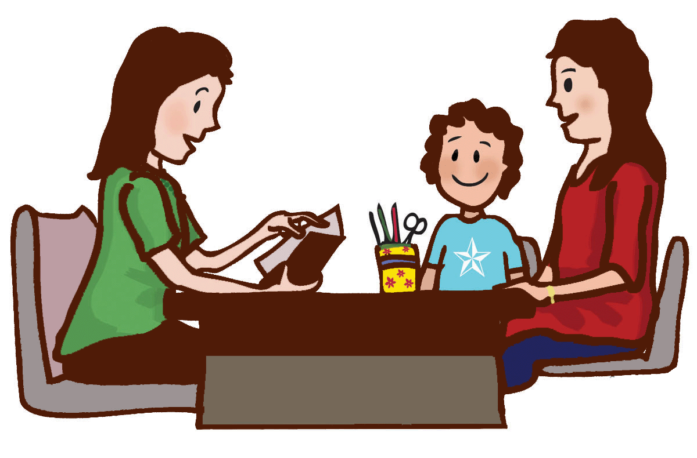

Early Childhood Education Centre
A world class preschool and daycare
COMMITTED TO WORLD-CLASS QUALITY EDUCATION

Parent-Teacher Conferences
A Team Approach to Your Child's Success
For your convenience, Sonshine Preschool has set aside March 10 and 11 for Parent-Teacher Conferences. Conferences will be scheduled at 10-minute intervals to review your student's progress. A sign-up sheet will be posted on each classroom door the week prior to the conferences to choose a time slot convenient to you. Any conferences not able to be scheduled during these times will be done by phone or scheduled after classes another day.
Strengths and Favorable Traits
Preschool parent-teacher conferences give teachers the opportunity to brag about your child. They know how much time, energy and devotion you have invested in your youngster, and they want to support your efforts. According to the Scholastic website, expect that your child's teacher will likely begin the conference by something positive and personal about your child. She will likely discuss academic strengths, interpersonal skills, and favorable personality traits. Preschool is partially about academics but it is also about learning to share, about being cooperative and being kind, so the teacher will likely discuss ways your child showcases those attributes.
Areas for Growth
Expect your child's preschool teacher to bring up areas where you child needs improvement, requires additional help or lacks development. For example, the teacher might suggest academic testing, special classes or skills to practice at home to make sure your child meets age-appropriate benchmarks and that she can keep up with others in the class, according to the Baby Center website. You may feel a little defensive during this part of the parent-teacher conference, but remember, the teacher is only trying to help your child grow and develop at an acceptable rate for her age and abilities.
Behavior Issues
Discussions about your child's preschool classroom behavior can be a sensitive topic, so be prepared to listen, rather than react. You don't get the opportunity to see your child interact in a classroom setting, so you may be surprised to hear about any concerns. If your child is bossy, doesn't like to share, bullies, withdraws, cries, throws tantrums or if he hits, bites or throws things, you need to know about it. As a parent, you can talk to your child about his upsetting behavior and support the teacher with behavior modification strategies. Preschoolers often outgrow this type of behavior, but you want to address them before they lead to bigger problems in the future.
Immediate Concerns
Expect your child's preschool teacher to bring up immediate concerns that affect your child. For example, your child might be a social butterfly but has recently started withdrawing from the group. Or, your youngster might cry uncontrollably after you drop him off in the mornings or he might suddenly refuse to share his art supplies with classmates. This is the perfect opportunity for you to share personal insight. Possibly, you're expecting another baby and your youngster feels jealous, or your spouse needs to travel for his job, and your child feels sad and insecure. Parent-teacher conferences are a two-way street, so your input can help the teacher understand what your child is dealing with.